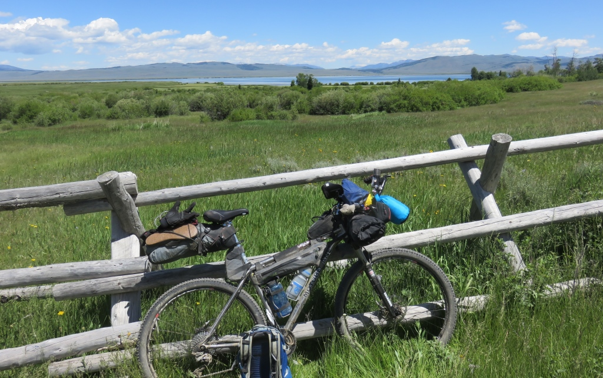
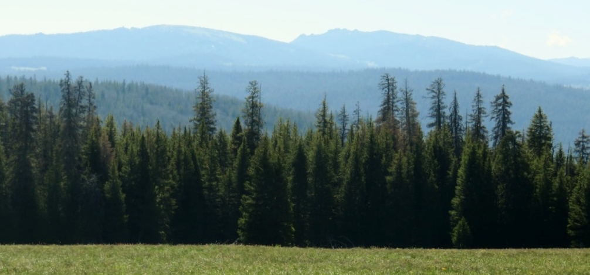
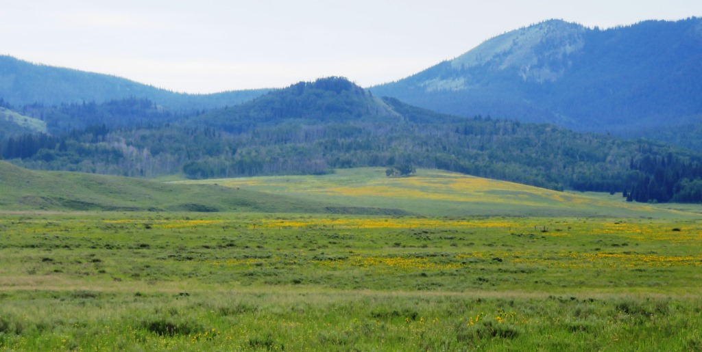
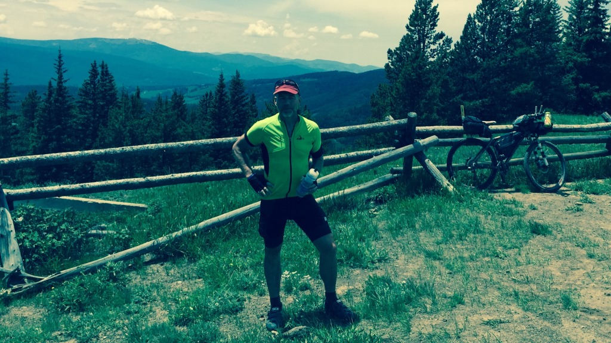

Middle two weeks - June 23 to July 7, 2015
Day 15 - Wide open spaces
Leaving Montana (finally)
7:23am, 14h 15mm, 89 miles, 2,566 ft of climbing


Day 17 - Grand Teton NP in AM, Togwotee in PM
Lost tourists and finding hidden lakes
08:14 AM, 61.8mi, 4,042ft of climbing

Day 18 - Union Pass only better
The Devil's Hole Trail and riding the divide
6:24 AM 82.6mi 4,157ft of climbing

Day 19 - Wyoming - after the mountains
A long, hot day in the desert
07:52 AM, 87.7mi, 3,560ft of climbing

Day 20 - Another long day in Wyoming's Great Basin
Water supply and disappearing jeep trails
07:15 AM, 97.9mi, 2,712ft of climbing


Day 22 - Colorado Mountains
Long steady climbs and descents
07:55 AM, 50.5mi, 3,220ft of climbing

Day 23 - A long day out on the road
A giant coast into Kremmling and mind games
06:55 AM, 108.7mi, 6,441ft of climbing

Day 24 - Dillon Reservoir, Breckenridge and Boreas Pass
Highest pass on my tour
7:00 AM 68.0mi 3,507ft of climbing


Day 26 - Marshall Pass and the Colorado Trail
Teepees, Rain and the 4th of July
07:30 AM, 46.4mi, 4,382ft of climbing

Day 27 - Lighting and Thunder in the afternoon
Two passes and outrunning the rain
07:49 AM, 101.0mi, 5,182ft of climbing

Day 28 - Getting some rest and plotting my course
The Library, Amish Cinnamon Rolls and Wild Boar
Sleeping in at the Windsor Hotel - zero ft of climbing